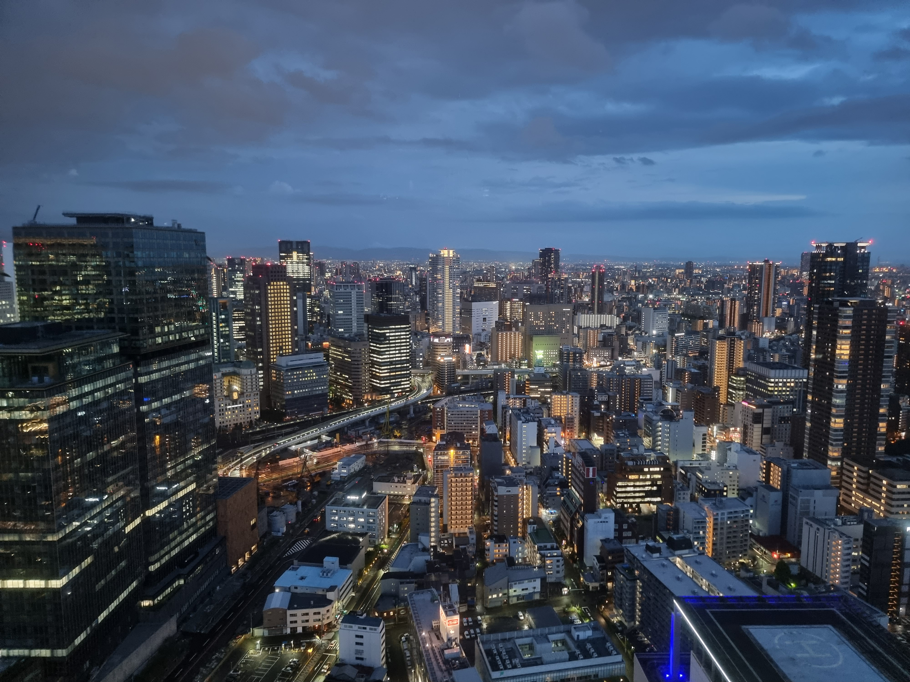

京都住宿｜Konoha Yura Machiya Holiday House二條/聚樂廻
基準站抓 JR 二條站/地下鐵二條站。Day1 二條城、Day3 嵐山都算順。
搭車自由行用。優先挑車站旁、少轉乘、可彈性塞進半天或雨天的景點。


基準站抓 JR 二條站/地下鐵二條站。Day1 二條城、Day3 嵐山都算順。
基準站抓長堀橋站、心齋橋站。行李日要注意沒有電梯，建議先確認入住/寄放方式。
以搭車自由行為前提，主線只放當天最順的點；備案是時間多、下雨、太累或臨時想改時可替換的點。
臨時遇到下雨、太累、行李寄放不順或時間多時，直接看這一區替換當天安排。
主要用在 Day1-Day3：抵達延誤、清水寺下雨、嵐山天氣不好或行李寄放不順時替換。
主要用在 Day4-Day8：USJ 提早離園、雨天、梅田日想換地方、最後一天機場前短逛。
USJ 提早離園就留在 CityWalk。海遊館人太多時，先吃飯或逛天保山 Marketplace；天氣好可加大阪港邊散步。
雨天可把大阪城縮短，改阿倍野 Q's Mall、天王寺 MIO。若很累，通天閣只看外觀和新世界吃飯。
晴天選中之島，雨天或想在地感選天神橋筋＋大阪生活今昔館，晚上想要非購物行程可排 teamLab Botanical Garden Osaka。
住宿附近不想再轉車時用。難波神社、御堂筋、本町到心齋橋都可短時間走完，適合行李日或機場日前回補。
天氣熱或腳累時，大阪城只走森之宮到天守閣外觀，改把休息放在 JO-TERRACE 或直接移動到天王寺。
雨天或只剩 1-2 小時時，改走 Namba Parks、Namba City、地下街，少淋雨也方便回住宿拿行李。
只安排車站周邊購物/咖啡，至少保留充足機場交通時間。心齋橋筋、道具屋筋、Namba City 都適合短時間回補。
以京都車站為中心，優先挑 JR、地下鐵、京阪、阪急能順路抵達的景點。適合半天、到站日、離開日前補點。
到站日、雨天、等車都好用。車站本身可逛，京都塔也適合當作短時間展望點。
不想再搭車時可排。寺院尺度大、早上也能安排，適合 Day1 或 Day8。
五重塔很有京都感，從京都站可步行或搭一站近鐵，動線簡單。
適合想慢走或帶小孩、遇到天氣不穩時。從京都站搭 JR 一站，控時容易。
最適合搭車自由行的京都景點之一。官方建議搭 JR 或京阪，避免公車時間不穩。
比伏見稻荷安靜，可看酒藏、河道與老街。適合想多走一個京都南側區域。
晴天優先，吃飯和散步都好安排。人多時不要塞太多點，保留河邊時間。
經典但人多。建議早到，和渡月橋排同半天即可。
逛街、買伴手禮、雨天備案都好用。和晚餐、甜點動線容易接。
站到景點很近，適合 Day1 或半天。和烏丸御池、三條、河原町容易接。
從京都搭 JR 可到，適合想避開市區人潮。抹茶、河邊、世界遺產可排半天。
以梅田、難波、天王寺、大阪港這幾個大站為主，挑下車後能直接逛、吃飯選擇多、遇雨也能調整的景點。
Day7 梅田最適合加的展望點。傍晚到夜景都好，天氣差則改商場地下街。
購物、咖啡、雨天備案。適合不想再移動時，把 Day7 做成彈性日。
比梅田藍天大廈更短時間、離逛街區更近。Day7 想快速補一個展望/拍照點可選。
梅田晚餐前後可順路走，商店街餐廳多。比大型百貨更有大阪街區感。
大阪感最強，和晚餐、章魚燒、大阪燒動線重疊。人多但好控時。
買衣服最順，雨天也能走。可一路接到道頓堀和難波。
Day3 從大阪住宿放完行李後最順的短時間景點。離心齋橋、御堂筋、本町都近，不需要額外轉乘。
喜歡廚具、餐具、章魚燒器、食物模型可以逛。比主街更有主題。
獅子殿很有辨識度，住宿在心齋橋時可當 Day3 或 Day8 短時間補點。
從心齋橋/難波很近，適合白天小吃或買水果海鮮。注意觀光客多、價格落差大。
你原行程已有阿倍野觀景台，這區非常適合搭車自由行，站內直結、省時間。
可把阿倍野、通天閣、新世界串成一段。走路多，但不用複雜轉乘。
天王寺/阿倍野附近想加一個寺院系景點可排。比大阪城安靜，適合早上或下午。
你原行程有大阪城。建議從森之宮進，動線清楚；天守閣本體要走一段。
吃飯休息比公園內方便。時間足夠可加水上路線，適合不想只逛城的人。
你原行程有海遊館。官方資訊顯示離大阪港站很近，雨天也穩。
和海遊館自然串接，不需要移動。適合把 Day6 做成一整天的港區行程。
比難波梅田安靜，適合想看近代建築、河邊散步、咖啡。晴天半天很好排。
中之島散步的室內備案。適合雨天、想避開購物區時安排。
OSAKA-INFO 介紹為日本最長商店街，雨天也好逛。Day7 或晚餐前後可替代梅田百貨。
室內博物館，適合雨天或不想逛商場時。可和天神橋筋商店街排同半天。
天神橋筋南側順路景點。想把商店街行程變得不只是逛街，可以一起排。
夜間光影展，和白天景點不同。若 Day7 晚上想加一個非購物行程，可以從天王寺/心齋橋搭御堂筋線過去。
白天散步或親子備案。若晚上要 teamLab，可下午先到長居公園。